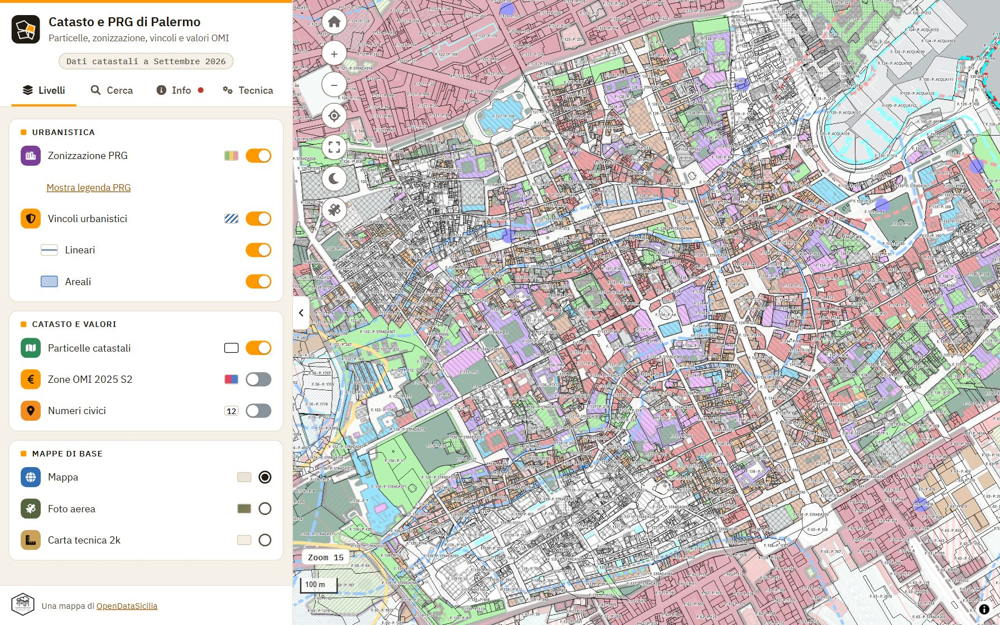
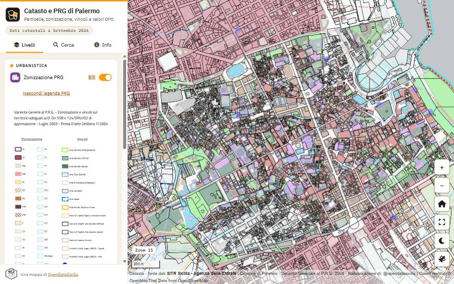
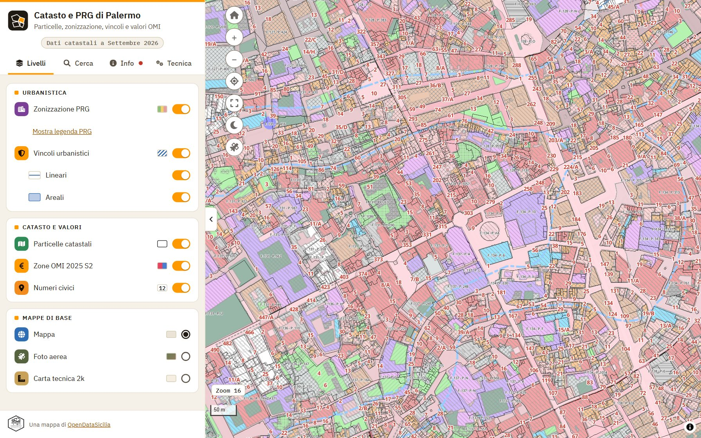
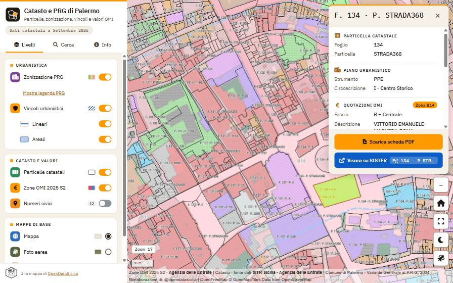
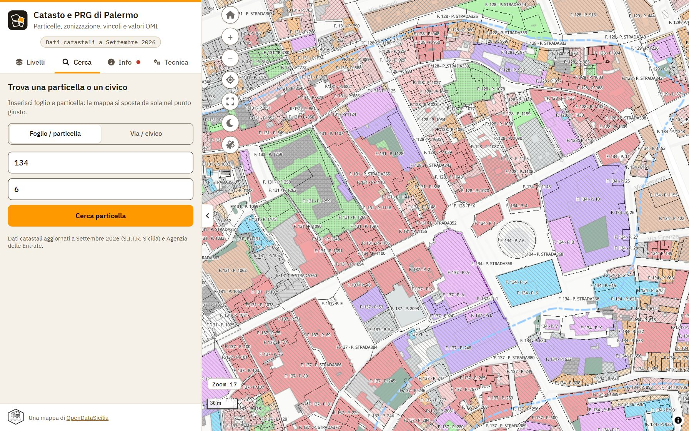
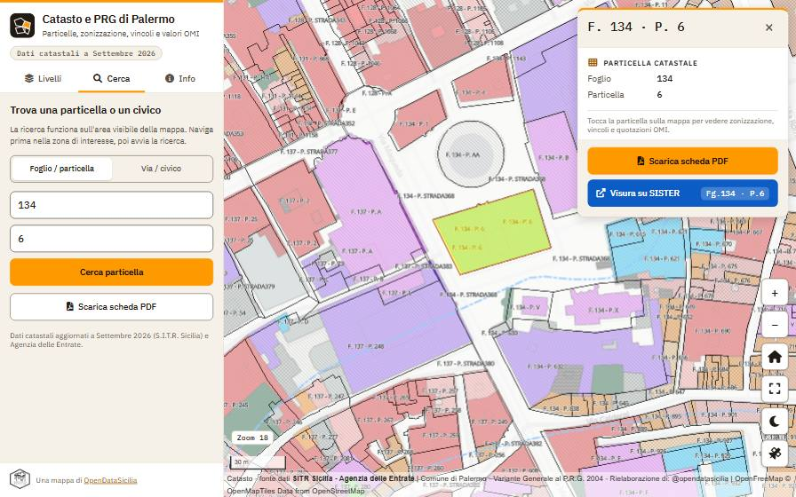
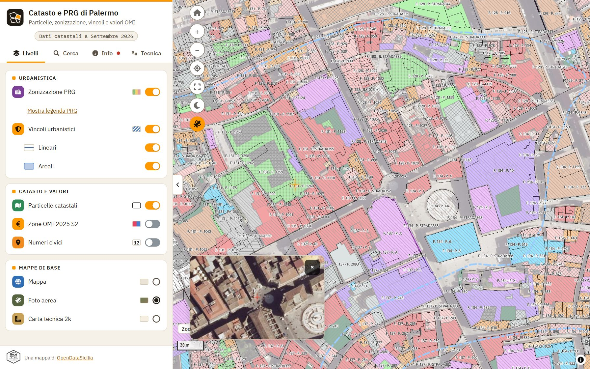

Variante Generale e dati catastali
Dal 1° gennaio 2025, l'accesso telematico alle banche dati ipotecarie e catastali diventa gratuito, segnando un'importante semplificazione per professionisti, pubbliche amministrazioni e cittadini.
La novità è contenuta nel provvedimento dell'Agenzia delle Entrate del 30 dicembre 2024, che attua le disposizioni introdotte dall'articolo 7 del decreto legislativo n. 139/2024.
Variante Generale al P.R.G. - Zonizzazione e vincoli sul territorio adeguati ai D. Dir 558 e 124/DRU/02 di approvazione - Luglio 2003 - Presa D'atto Delibera 7/2004 e Piano Particolareggiato Esecutivo del centro storico.
Rielaborazione a cura di @opendatasicilia su opendata del Comune di Palermo.
Fonte dati Zonizzazione e vincoli -
Comune di Palermo , Opendata , Urbanistica
Perimetrazione Zonizzazione P.R.G. vigente;
Vincoli vigenti della Variante al P.R.G. - CC-BY 4.0
La variante Generale al P.R.G. è stata redatta dal Settore Urbanistica nel 2004 oggi Area Urbanistica della rigenerazione urbana, della mobilità e del centro storico
Qui gli elaborati della Variante Generale
Il Piano Particolareggiato Esecutivo (PPE) è stato redatto dall'Ufficio Centro Storico nel 1993, oggi Ufficio Città Storica
Qui gli elaborati del PPE
Fonte dati catastali: S.I.T.R. - Sistema Informativo Territoriale Regionale, con aggiornamenti trimestrali e Agenzia delle Entrate con aggiornamenti semestrali. I dati sono rilasciati con licenza CC-BY 4.0 e quelli qui pubblicati sono aggiornati a Settembre 2026.
L'Agenzia delle Entrate è l'amministrazione titolare dei dati, rilasciati con licenza CC-BY 4.0.
L'Agenzia delle Entrate non è responsabile per qualunque tipo di danno diretto, indiretto o accidentale derivante dall'impiego delle informazioni raccolte tramite questo servizio
Autore: @gbvitrano & Claude AI (Anthropic)
Sviluppo tecnico: Collaborazione human–Claude AI (Anthropic), che ha supportato lo sviluppo dell'architettura modulare, l'ottimizzazione del codice e l'implementazione di funzionalità avanzate di visualizzazione.
Disclaimer: I contenuti presenti in questa sezione, compresi testi ed elementi grafici, hanno carattere puramente informativo e divulgativo.
Non sono presenti dati personali o sensibili. Si precisa che questi materiali non costituiscono documenti ufficiali né hanno alcun valore legale.
Per consultare la documentazione ufficiale e legalmente vincolante, si prega di fare riferimento agli atti definitivi allegati alle relative deliberazioni degli organi competenti.
Guida all'uso
La mappa mostra particelle catastali, zonizzazione e vincoli del PRG, zone OMI e numeri civici di Palermo. In alto, i pulsanti della barra dei comandi danno accesso a tutte le funzioni.
1. Muoversi sulla mappa

Vista iniziale: barra dei comandi in alto, cursore dello zoom sotto di essa
- Spostare: trascina con il mouse o con un dito.
- Zoom: rotellina del mouse, pizzico su mobile, oppure il cursore (livelli 12–18) e i numeri sotto di esso.
- riporta alla vista iniziale; attiva lo schermo intero.
- Le etichette F. foglio - P. particella compaiono con lo zoom avanzato.
2. Gestire i livelli (Layers)

Pannello Layers: ogni livello si accende e spegne con l'interruttore
Il pulsante Layers apre il pannello dei livelli:
- Zonizzazione PRG: zone territoriali omogenee (Variante Generale 2004 e PPE del centro storico).
- Vincoli urbanistici: lineari e areali, attivabili anche separatamente dal sottomenu .
- Particelle catastali: perimetri e numerazione di foglio e particella.
- Zone OMI: 51 zone con le quotazioni immobiliari dell'Agenzia delle Entrate.
- Numeri civici: 165.000+ civici (ANNCSU).
- Cartografia: Carta Tecnica 2k, mappa di base e Foto aerea.

Esempio con Numeri Civici e Zone OMI attivi insieme alla zonizzazione
3. Ottenere le informazioni di un punto

Clic su una particella: scheda con dati catastali e piano urbanistico
Clicca (o tocca) un punto della mappa: appare una scheda unica con i dati di tutti i livelli sovrapposti in quel punto: particella (foglio, numero), strumento urbanistico e circoscrizione, vincoli, zona OMI o civico.
Il pulsante blu Visura su SISTER apre il servizio dell'Agenzia delle Entrate per la visura della particella (richiede l'accesso a SISTER).
4. Cercare una particella o un civico

Finestra di ricerca: interruttore tra Foglio/Particella e Via/Civico
- Porta la mappa nella zona di interesse: la ricerca opera solo sull'area visibile.
- Premi Cerca.
- Scegli la modalità con l'interruttore: Foglio / Particella oppure Via / Civico (il nome della via ha il suggerimento automatico).
- Inserisci i dati e premi Avvia ricerca.

La particella trovata viene evidenziata e la mappa si centra su di essa
Se compare "Nessuna particella trovata", sposta la mappa sulla zona giusta e riprova.
5. Scheda PDF
Dopo una ricerca compare il pulsante PDF nella barra dei comandi: genera una scheda con mappa, dati catastali, zonizzazione e vincoli. Su smartphone ruota il dispositivo in orizzontale (landscape).
6. Vista satellitare sincronizzata

Minimappa satellitare in basso a sinistra, centrata sul mirino
Il pulsante Satellite apre una finestra con la foto aerea che segue la mappa principale (mirino al centro). Chiudila con ×. Per coprire l'intera mappa usa invece il livello Foto aerea.
Consigli
- Il link dell'indirizzo del browser conserva zoom e posizione: puoi condividerlo.
- Se i livelli sembrano mancanti, controlla di aver superato lo zoom minimo e che siano attivi nel pannello Layers.
Nuova mappa con particelle catastali e strumenti urbanistici vigenti di Palermo
La nuova versione è completamente riprogettata e ottimizzata, grazie all'aiuto di @deepseek_ai, per offrire una migliore esperienza utente.
Principali miglioramenti
La novità più significativa riguarda la gestione dei tooltip. Nella versione precedente, in presenza di elementi sovrapposti nei livelli PMTiles, i tooltip si sovrapponevano creando confusione. Ora, lo script genera automaticamente un tooltip unificato che integra in modo ordinato le informazioni di tutti gli elementi presenti in un punto specifico.
Inoltre, è stato integrato un pratico modulo di ricerca che permette di individuare rapidamente fogli e particelle specifiche.
Infine è stata implementata una finestra dinamica che visualizza una mappa satellitare, la quale si sincronizza automaticamente con la mappa principale.
Aspetti tecnici
Il codice è stato completamente ristrutturato per garantire:
- Maggiore stabilità e riduzione dei bug
- Performance ottimizzate
- Migliore gestione della visualizzazione dei dati
- Modulo di ricerca per Foglio e particella catastale
- Finestra dinamica per visualizzare la mappa satellitare
Mappa Variante Generale versione base
La prima versione della mappa della Variante Generale rimane disponibile per la consultazione al seguente indirizzo.
Ringraziamenti
Un sentito ringraziamento va a @aborruso e @totofiandaca, i cui insegnamenti e la costante condivisione di conoscenze hanno contribuito in modo determinante alla realizzazione di questo progetto. Il loro supporto mi permette di implementare e migliorarmi nel campo della cartografia digitale.
I principali strumenti usati per realizzare la mappa
- QGIS — elaborazione e gestione dei dati geografici
- CatastoIT_GML_Merger_Pro — plugin QGIS per l'importazione e la fusione dei file GML catastali
- tippecanoe — conversione dei dati vettoriali in tile PMTiles ottimizzati
- MapLibreGL JS 3.3 — rendering della mappa interattiva
- PMTiles 2.4 — distribuzione serverless dei tile vettoriali e raster
- jsPDF 2.5 — generazione delle schede PDF
- Turf.js 6 — analisi geometrica e calcolo delle aree
- Interact.js — gestione del pannello informativo ridimensionabile
Ricerca geografica delle particelle catastali
Il layer Particelle Catastali viene esposto in formato PMTiles.
Il PMTiles è un formato di file progettato per archiviare e servire dati geospaziali, come mappe vettoriali o raster, in modo efficiente. È un formato basato su tessere (tiles), che permette di suddividere i dati in piccole porzioni (tiles) per un accesso rapido e selettivo.
La particolarità di PMTiles è che è un formato monolitico, cioè tutti i dati sono contenuti in un unico file, a differenza di altri formati che richiedono molteplici file separati. Questo lo rende più semplice da gestire e distribuire, ad esempio su un server web o su un CDN (Content Delivery Network).
Cerca una Particella
Viste le caratteristiche del PMTiles, Durante la ricerca con PMTiles, è necessario che la particella da visualizzare sia compresa nell'area mostrata sullo schermo del proprio dispositivo (PC desktop o mobile). In caso contrario, poichè il dato non sarà stato caricato, verrà mostrato un messaggio di errore.
Ricerca con PMTiles
Dato che il formato PMTiles è progettato per caricare solo le porzioni di dati (tiles) necessarie per visualizzare l'area attualmente visibile sullo schermo (monitor del PC o display del dispositivo), è fondamentale assicurarsi che la particella o l'oggetto geospaziale richiesto rientri nell'area visualizzata.
Stampa PDF
Una volta effettuata la ricerca della particella catastale tramite il pulsante 'Cerca', comparirà una nuova icona sottostante.
Cliccando su questa icona, il sistema genererà automaticamente un documento PDF che include una mappa dettagliata con la particella evidenziata.
Il documento contiene inoltre tutte le informazioni catastali della particella selezionata e i relativi dati urbanistici, compresi la zonizzazione dell'area e gli eventuali vincoli esistenti.
N.B. Non è possibile generare file pdf quando si usa un device mobile orientato in verticale (Portrait)
Per generare PDF con le informazioni richieste, ruotare il dispositivo in orientamento orizzontale (modalità landscape).
Video demo
Video di presentazione delle nuove funzionalità introdotte sulla mappa